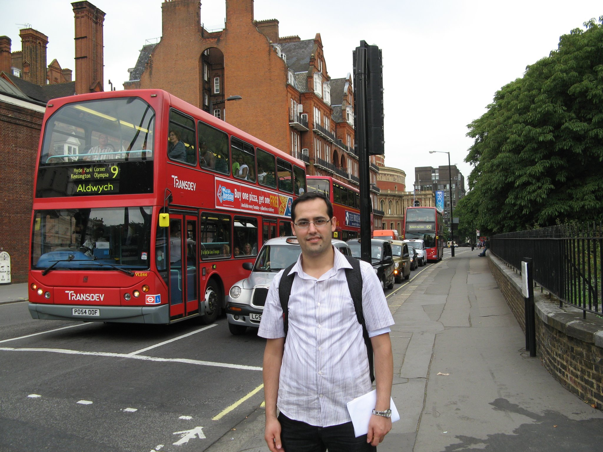

|  | Bashar Mohammad is a fellow of Pembroke college. He joint the department of Computer Science and Tecnology, Cambridge in May, 2017. He is interested in statistical inference specifically Bayeisan inference and its appications to regression and classification problems. His current work fouses on Variational Bayes to increase the generalization ability of neural networks. Bashar completed his PhD in digital signal and image processing at Heriot-Watt university in 2010. Before coming to Cambridge Dr. Mohammad was a lecturer in the department of computer science at Tishreen university in Syria and worked on different topics such as speeach and face recognition. |
When the marginal likelihood is a high-dimensional integral, it would not be feasible to compute the posterior analytically. Therefor the target posterior distribution can be approximated using stochastic methods such as Markove Chain Monte Carlo and deterministic methods such as Variational bayes where the approximation is parameterised with some variational parameters, and then minimise a probabilistic divergence (e.g., the Kullback-Liebler divergence) with respect to the variational parameters.
In my Github repositories, an intuitive explanations of the approximated inference methods is presented as well as their applications to regression and classification problems.